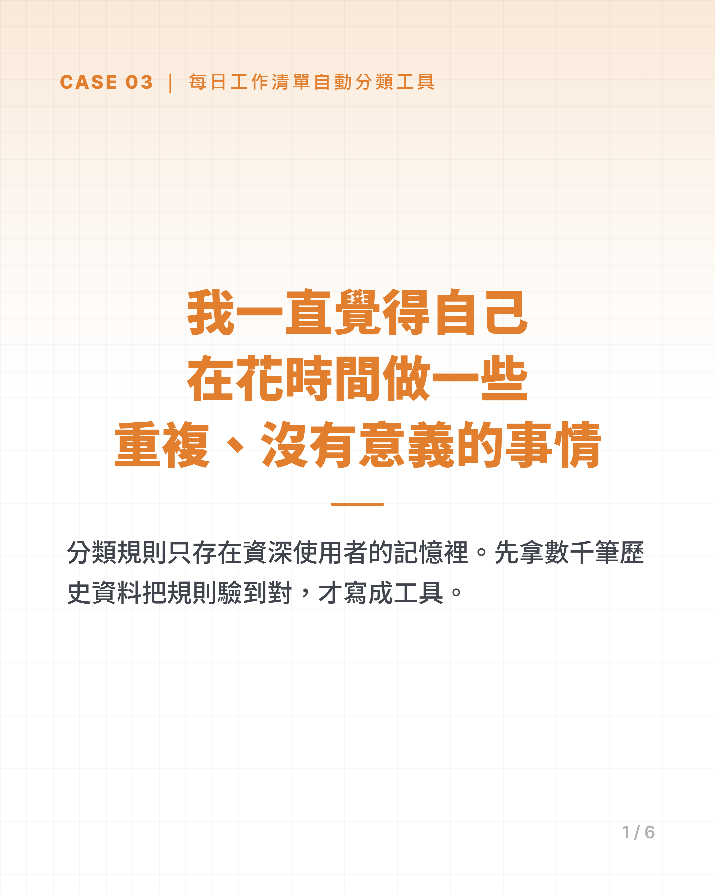
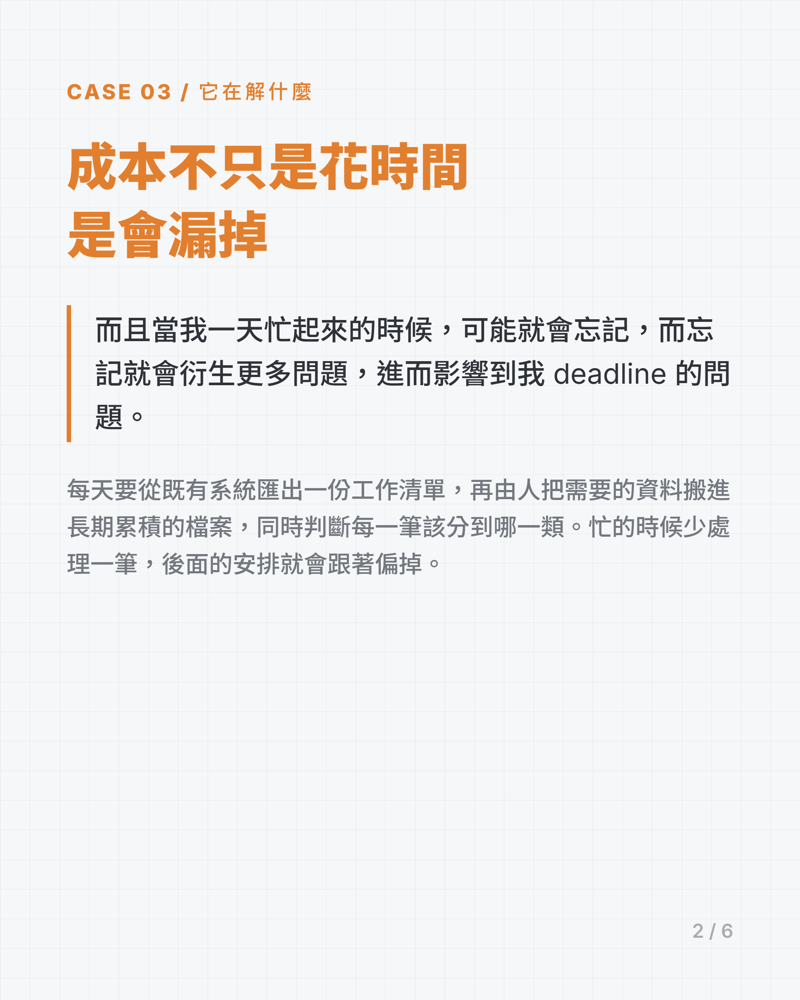
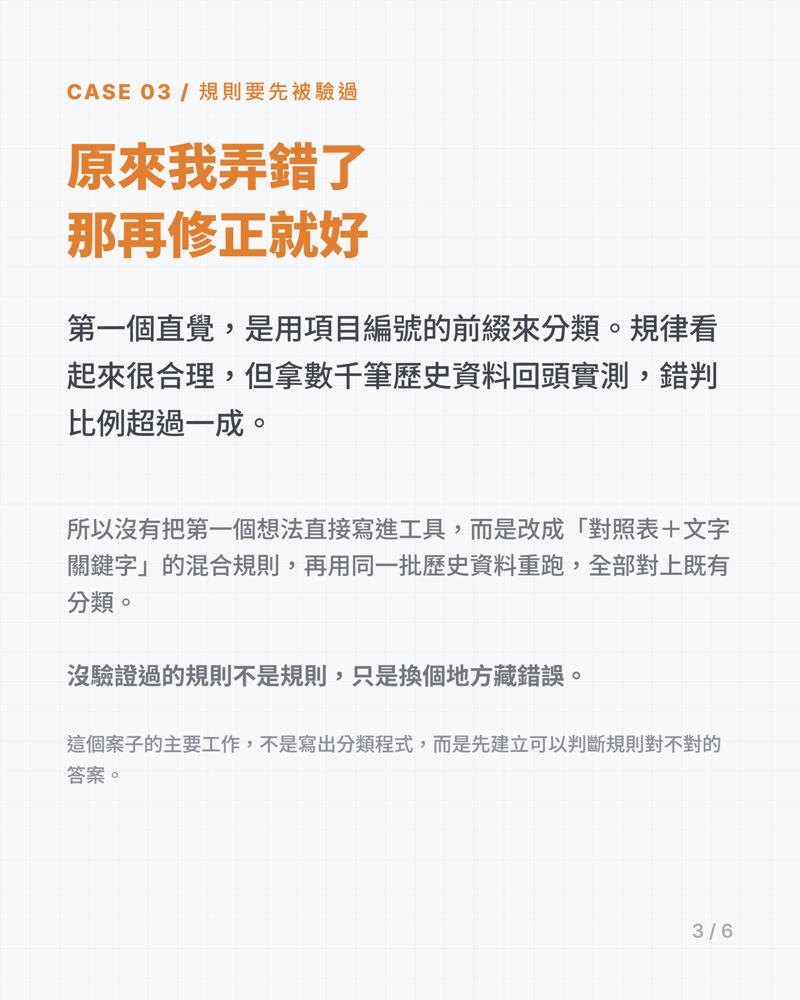
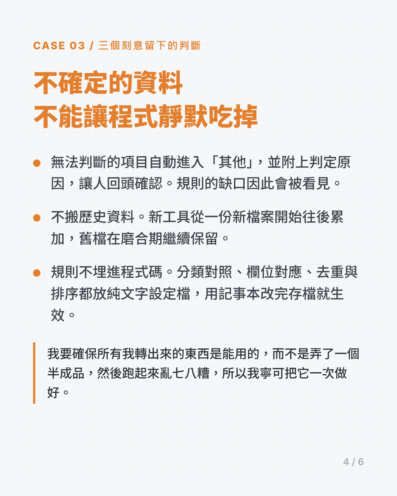
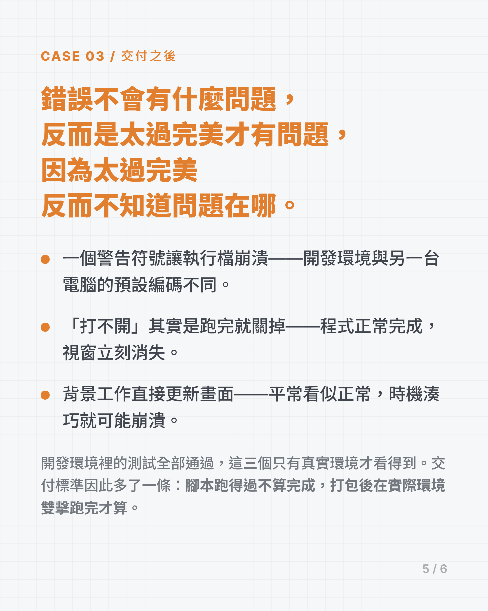
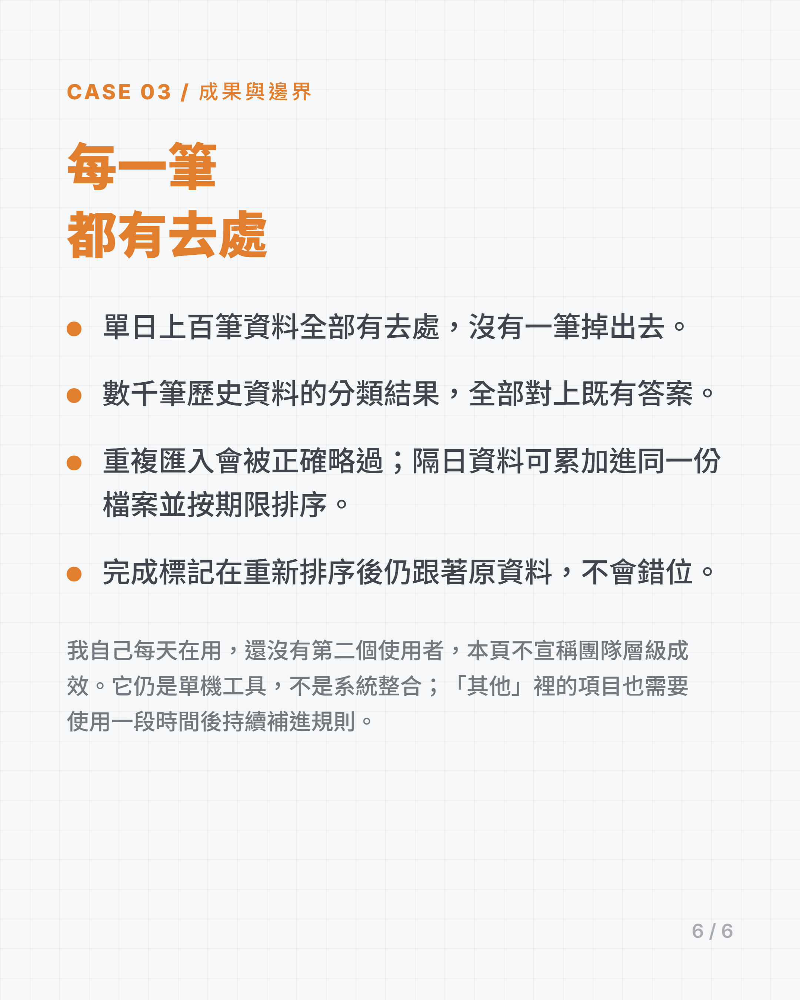

一、成本不只是花時間，是會漏掉
每天都會從既有系統匯出一份工作清單，再由人把需要的資料搬進長期累積的檔案，同時判斷每一筆該分到哪一類。
原始資料有大量用不到的欄位，真正會留下的只是一小部分。更麻煩的是，分類規則沒有被完整寫下來，而是散在資深使用者的記憶裡。
忙的時候少處理一筆，後面的安排就會跟著偏掉。我要解的不是「讓輸入快一點」，而是讓每一筆都有去處，也能看見哪些規則還沒說清楚。
二、工具之前，先把規則挖出來
第一個直覺，是用項目編號的前綴來分類。這個規律看起來很合理，但拿數千筆歷史資料回頭實測後，錯判比例超過一成。
所以我沒有把第一個想法直接寫進工具，而是改成「對照表＋文字關鍵字」的混合規則，再用同一批歷史資料重跑。調整後，全部對上既有分類。
沒驗證過的規則不是規則，只是換個地方藏錯誤。
這個案子的主要工作，不是寫出分類程式，而是建立可以判斷規則對不對的答案。
三、三個刻意留下的人為判斷
- 不確定的資料不丟掉。所有無法判斷的項目自動進入「其他」，並附上判定原因，讓人回頭確認。規則的缺口因此會被看見，而不是被程式靜默吃掉。
- 不搬歷史資料。新工具從一份新檔案開始往後累加，舊檔在磨合期繼續保留。要省的是每日重複輸入，不是為了自動化而承擔一次大搬家的風險。
- 規則不埋進程式碼。分類對照、欄位對應、去重方式與排序依據都放在純文字設定檔。使用者用記事本就能修改，存檔後直接生效，不必重新打包程式。
我負責問題定義、分類答案、模糊地帶的裁決與實際驗收；AI 負責程式碼、批次實測與找 bug。規則能被驗證，是因為判斷對錯的標準來自真正做這件事的人。
四、流程改變
原本流程
- 打開每日匯出檔
- 挑出真正需要的欄位
- 逐筆搬進累積檔
- 靠記憶判斷分類
- 自行去重、排序與整理完成標記
工具流程
- 選今天的匯出檔
- 選要累加的目標檔
- 按執行
實測時，單日上百筆資料全部進入主要類別、次要類別或「其他」，沒有任何一筆掉出去；同一份資料再次匯入，也能被正確辨認並略過。
五、交付之後，才抓到真正的問題
開發環境裡的測試全部通過，真正交到使用者手上後，仍然出現三種只有真實環境才看得到的問題：
- 一個警告符號讓執行檔崩潰。開發環境與另一台電腦的預設編碼不同。修正後，無法顯示的字元會降級處理，不再讓整支程式中斷。
- 「打不開」其實是跑完就關掉。程式正常完成，但視窗立刻消失，使用者看不到結果。驗收因此補上「真的雙擊一次，確認結束前停住」。
- 背景工作直接更新畫面。平常看似正常，時機湊巧就可能崩潰。後來改成背景工作只傳訊息，由主執行緒負責畫面更新。
這三個問題讓交付標準多了一條：腳本跑得過不算完成，打包後在實際環境雙擊跑完才算。
六、成果與邊界
量測方式（這些是收據，不是重點）：
- 單日上百筆資料全部有去處
- 數千筆歷史資料的分類結果全部對上既有答案
- 重複匯入會被正確略過
- 隔日資料可累加進同一份檔案，並按期限正確排序
- 完成標記在重新排序後仍跟著原資料，不會錯位
目前已完成視窗版與可直接執行的版本。它仍是單機工具，不是完整的系統整合；「其他」裡的項目也需要使用一段時間後持續補進規則。
使用狀況：我自己每天在用，還沒有第二個使用者。
所以這一頁不宣稱任何團隊層級的成效。上面那些是規則驗證的結果，不是推廣的結果。
這個限制是刻意接受的：先把每天重複發生、而且答案已能驗證的那一段做穩，再決定上下游是否值得繼續自動化。
七、案例卡






1 / 6